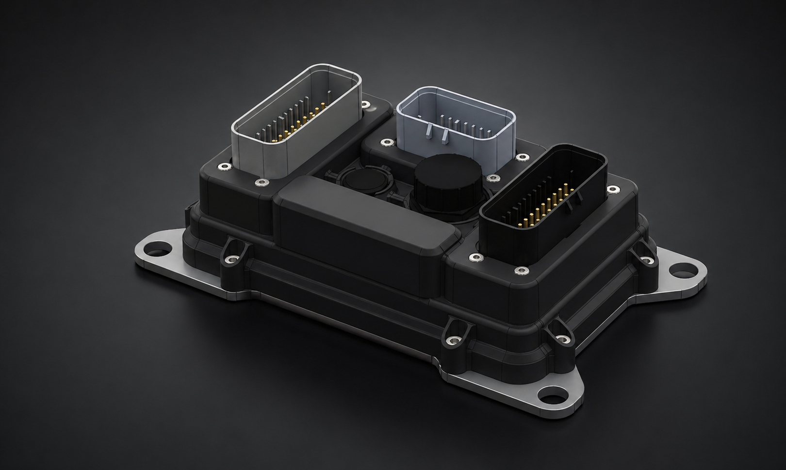
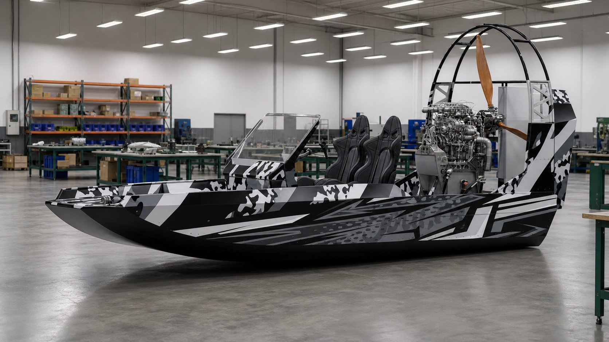

Блок управления двигателем для аэролодок: встроенная диагностика, связь по CAN и прочное исполнение для работы на воде.
Запросить информацию
Блок управления двигателем для аэролодок: встроенная диагностика, связь по CAN и прочное исполнение для работы на воде.
Для аэролодок и судов с нестандартными условиями работы: влага, вибрация и много бортовых электронных модулей.
